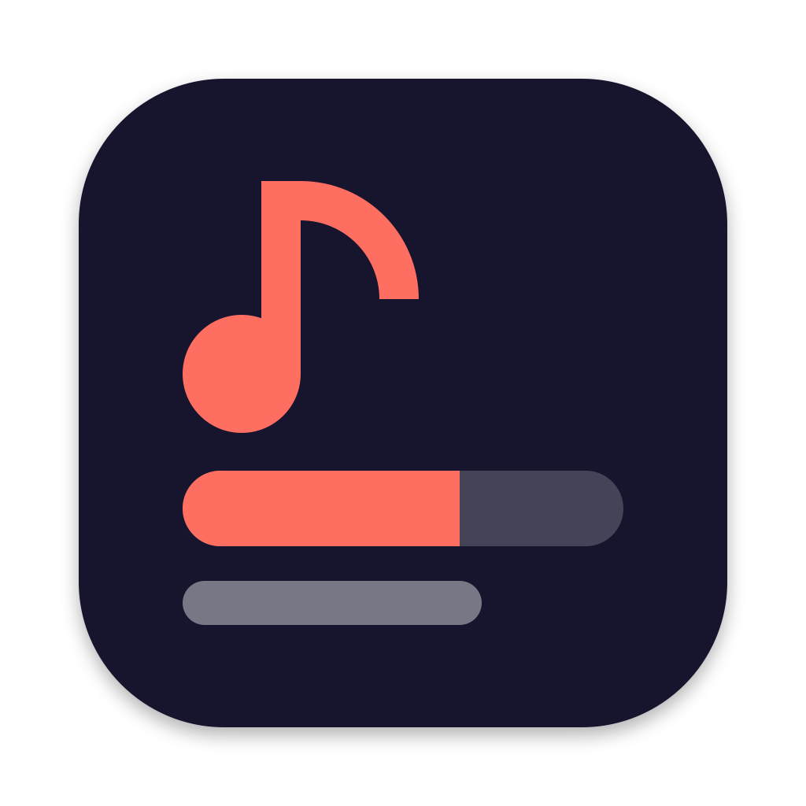

Floating overlay
An always-on-top line you can click through. Resizes to fit each line and stays centred where you put it.

yalyricyalyric follows whatever Spotify or Apple Music is playing and shows the current line on your desktop, filling in as it's sung.
It lives in the menu bar, has no Dock icon, and uses about 65 MB of memory.
Detects which one is playing and switches automatically. If both are playing, Spotify wins.
The current line fills with colour in time with the music, so you always know where you are.
Show a Chinese translation or Japanese romaji under the current line instead of the next one, when the lyrics include them.
Asks LRCLIB, NetEase Cloud Music, Kugou and others at once, and keeps the best synced match.
Checks title, artist and duration before trusting a result, and treats 執迷不悔 and 执迷不悔 as the same title.
Six presets, five line transitions and full font and colour control, previewed as you edit.
Follow the mouse, follow the focused window, pin to one screen, or show on every screen.
Hide the overlay or nudge the timing without leaving what you're doing. Every binding is configurable.
Lyrics are cached on disk, so songs you've played before appear immediately.
Turn on any combination.
An always-on-top line you can click through. Resizes to fit each line and stays centred where you put it.
Sits on the wallpaper and shows 3 to 9 lines, with the current one highlighted.
The current line next to the clock. Click the icon for the full, auto-scrolling lyrics.
Defaults below. Change or turn them off in Settings → Shortcuts.
yalyric is open source and ad-hoc signed rather than notarized, so macOS needs to be told to trust it. Homebrew does that for you.
$ brew tap Question406/tap $ brew install --cask yalyric
Upgrade later with brew upgrade --cask yalyric.
$ xattr -cr /Applications/yalyric.app
Get the zip from Releases, drag the app to Applications, then run this to clear the quarantine flag.
$ git clone https://github.com/Question406/yalyric.git $ cd yalyric $ swift build && .build/debug/yalyric
Needs Swift 5.9 or later. No dependencies.
The icon appears in your menu bar. Allow access to Spotify or Music when macOS asks.
Lyrics appear by themselves. Left-click the icon for the full lyrics; right-click for Settings.
Pick a theme, a transition and where the overlay sits. Settings previews the style as you edit it.